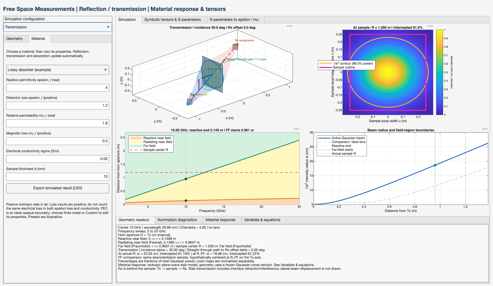
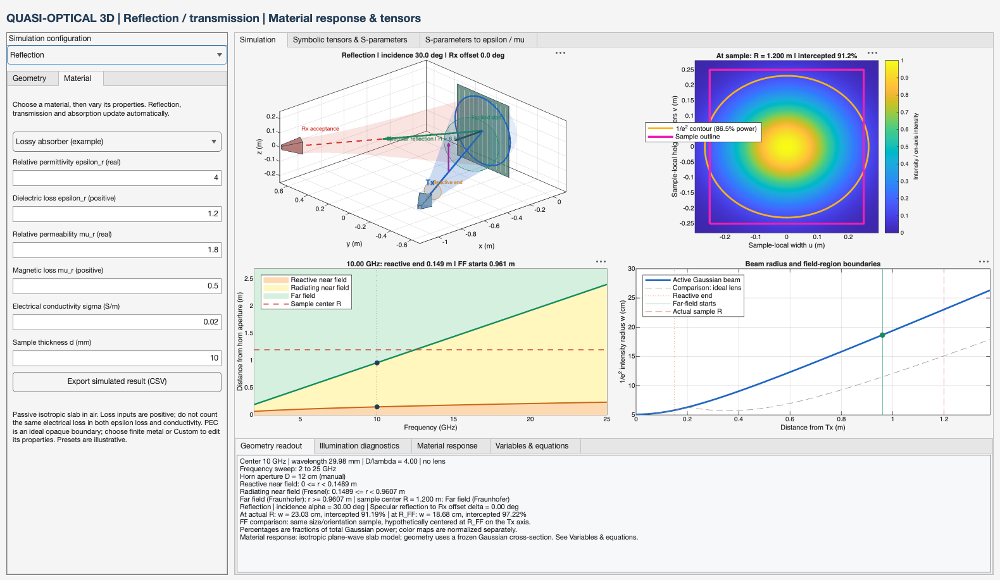
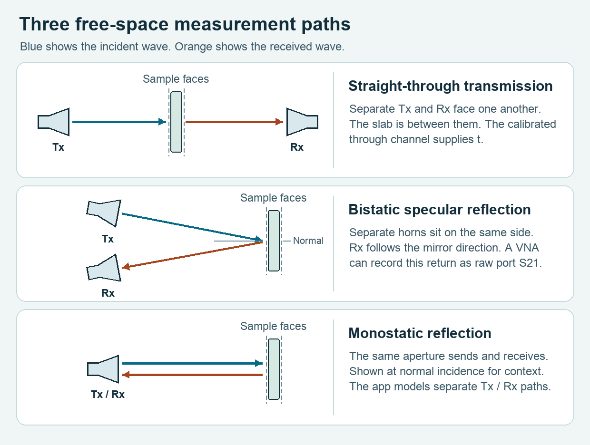
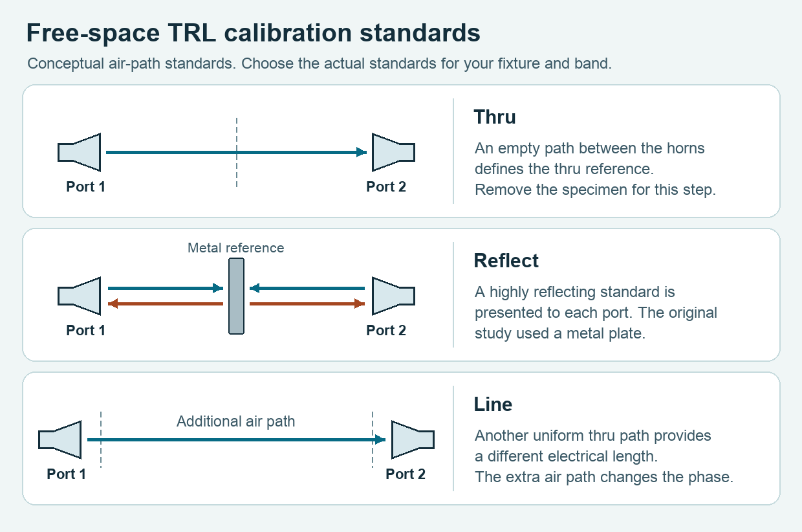
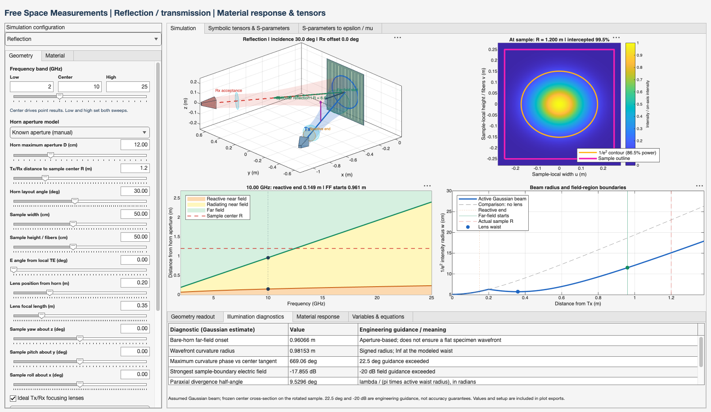
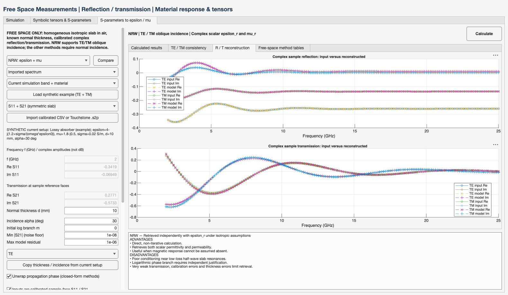
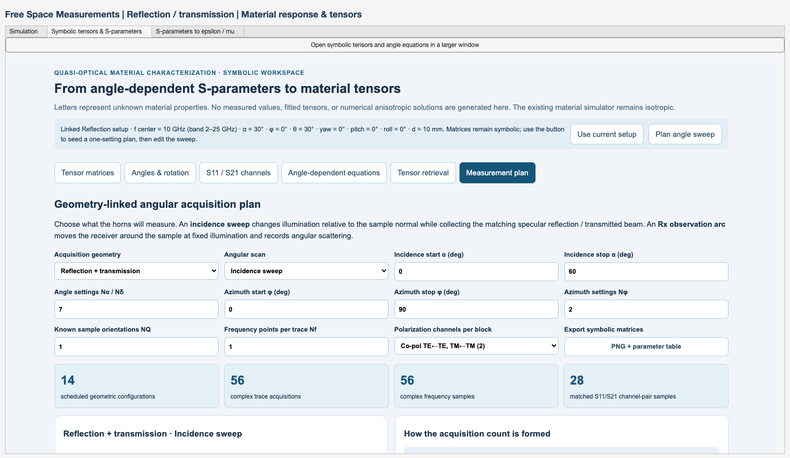

Straight-through transmission
Separate transmitting and receiving horns face each other with the sample between them. Calibrated through-path data supply the specimen transmission coefficient t.
Plan how a microwave beam reaches a sample. Compare transmission and reflection, then use calibrated S-parameters to retrieve material properties in MATLAB.
QuasiOpticalBistatic3D
Run this command from the project folder. MATLAB Online requires sign-in. Basic compatibility is unverified.

All four MATLAB simulations use the same 10 mm lossy slab at 10 GHz, 30° incidence, and a 1.2 m horn-to-sample distance. The ideal lenses reduce the modeled beam radius at the sample from 23.0 cm to 15.1 cm. This concentrates the illumination on the sample while leaving the slab properties fixed. Select any screenshot to view it at full size.
The receiving horn sits beyond the sample, on the same line as the incident beam.

Separate transmitting and receiving horns sit on the incident side. The receiver is aligned with the specular path.


Retrieval assumes a homogeneous, isotropic slab in air and known normal thickness. Experimental accuracy against calibrated reference measurements remains unverified.
Follow the signal from the horns to the slab faces, then from the calibrated complex measurements to the estimated material properties.
A vector network analyzer (VNA) measures ratios of outgoing to incident waves. For example, VNA S21 is the complex wave received at port 2 divided by the incident wave at port 1, with no excitation from port 2. Each complex ratio carries amplitude and phase over frequency.
Separate transmitting and receiving horns face each other with the sample between them. Calibrated through-path data supply the specimen transmission coefficient t.
Separate Tx and Rx horns are on the incident side. At a fixed orientation, position Rx in the specular direction. A reflection that travels from port 1’s horn to port 2’s horn appears as raw VNA S21. After calibration and channel mapping it supplies specimen reflection r.

View full sizeEstablish the fixture response in the lab and de-embed any remaining air path to the slab faces. This removes the corresponding propagation delay and prevents fixture effects from being interpreted as slab phase. Use time gating before import when echoes are separated from the main response in time.
Map the calibrated specimen data to the app’s input convention, S11 = r and S21 = t. Both must describe the same thickness, angle and polarization at the same frequencies. The original paper also used a metal plate behind the specimen for its reflection-only extraction. That is a separate measurement from the bare calibration plate and from the app’s air–slab–air model.

View full sizeUse Simulation → Geometry to set the low and high endpoints of the simulation sweeps. The center frequency sets the geometry, beam plots, and point results. Enter the largest span of the horn aperture, or select a nominal 15, 20, or 25 dBi estimate if the physical dimension is unknown. The estimate assumes 50% efficiency and holds the resulting aperture fixed across the sweep.
Here c is the speed of light, f is frequency, and D is the aperture span. The app displays reactive near field, radiating near field, and far field as bare-horn references. The horn layout angle sets the nominal geometry. Yaw, pitch, and roll rotate the sample normal, changing actual incidence and the specular direction. The receiver offset shows how far the chosen Rx direction departs from that path.
In the paraxial model, w is the 1/e2 intensity radius, z is distance from the beam waist, zR is the Rayleigh range, and ρ is distance from the beam axis. The bare launch waist is modeled as w0 = 0.425D. An ideal thin lens before the sample changes the waist and wavefront curvature. Lens position and focal length therefore change how the beam fits the rotated specimen. Bare-horn field boundaries stay the same.
Intersecting that beam with a tilted sample stretches its footprint along the tilt. The illumination table estimates the strongest field anywhere on the sample edge and the largest phase deviation from a plane tangent to the wavefront at the center. At a transverse radius ρ, the local quadratic phase deviation is about πρ2/(λ0|Rwave|), where Rwave is the radius of curvature.
Worked setup. At 10 GHz, λ0 ≈ 30 mm. A 12 cm aperture gives RFF ≈ 0.96 m. For a 50 cm × 50 cm specimen at 1.2 m and 30° incidence, the modeled beam radius decreases from 23.0 cm to 15.1 cm with a lens 0.20 m from each horn and focal length 0.35 m. The diagnostics can still flag substantial phase variation or edge illumination in a focused setup.

View full sizeRelative permittivity εr describes the electric response and relative permeability μr the magnetic response. With the app’s e+jωt convention, the passive loss terms ε″ and μ″ are nonnegative. The dielectric loss tangent is ε″/ε′ for the dielectric loss term. Conductivity σ adds electric loss to the effective permittivity, so a fitted electric loss can include conduction. Here ε0 is the vacuum permittivity and ω is angular frequency.
An impedance mismatch sets the one-interface reflection Γ. Oblique TE and TM use different normalized impedances zp. For one pass across normal thickness d, propagation changes phase and amplitude through P. Here qs = kz/k0 is normalized slab propagation normal to the faces, θ is the angle from the sample normal, and k0 = 2π/λ0.
Summing the repeated internal reflections gives the complex sample-face amplitudes r and t for a homogeneous plane-wave slab with air on both sides.
R = |r|2Reflected slab power
T = |t|2Transmitted slab power
A = 1 − R − TAbsorbed slab power
Each power fraction is relative to incident power on the slab. The app estimates the intercepted share of the Gaussian beam separately. Any beam power that misses the specimen is spillover. For mixed linear polarization the slab power response uses cos2ψ for TE and sin2ψ for TM, where ψ is the electric-field angle from local TE. See the polarization-specific impedances for the oblique equations.
Return loss is −10 log10(R) and insertion loss is −10 log10(T), both in dB. The reflection view also gives an approximate radar cross section for a large uniformly illuminated plate in the specular direction, scaled by slab reflectance. Receiver coupling and off-specular scattering require a separate model. See the specular plate approximation.
Import complex CSV or Touchstone data, or enter one complex reflection and transmission pair by hand. Each spectrum needs a known normal thickness and one fixed incidence and polarization. The optional four-coefficient input uses the symmetric averages of S11 with S22 and S21 with S12, then checks the reconstruction against all four original channels.
| Method | Incidence | Properties |
|---|---|---|
| Nicolson–Ross–Weir (NRW) | Normal or fixed oblique, with TE or TM specified | Retrieves scalar εr and μr |
| NIST iterative | Normal | Retrieves εr iteratively, with μr = 1 assumed |
| New non-iterative | Normal | Retrieves εr from propagation, with μr = 1 assumed |
Measured phase repeats every 2π. For the direct methods, justify the initial phase branch with independent information about the sample. For the iterative method, use a physically plausible initial permittivity. Reconstruction compares the fitted complex channels with the inputs. Different branches can fit the same data, and weak transmission or near half-wave resonances can make retrieval unreliable.
To try the workflow, choose the synthetic 6 GHz, 45° benchmark with a 10 mm slab, known εr = 4 − j0.08, and μr = 1. The broadband option instead generates complex TE and TM channels from the current simulation material and frequency band.

View full sizeAn isotropic material has the same constitutive response in every direction. An anisotropic material needs tensors whose components can differ with direction. The symbolic workspace lets you choose general, reciprocal, diagonal material axes, or isotropic assumptions. Rotate components from the material frame to the lab frame with the sample rotation matrix Q.
Plan the geometry with incidence angles, azimuths, known specimen orientations, polarization channels, and frequencies. Multiply those counts by the selected reflection/transmission blocks to obtain the number of scheduled complex samples. For example, 7 incidence angles × 2 azimuths × 1 orientation gives 14 geometries. With two co-polarized channels and both reflection and transmission, that is 56 complex traces, or 56 complex samples when each trace has one frequency. These are acquisition counts. Multiple settings can still yield dependent equations.
Only the scalar isotropic inverse is numerical. TE/TM agreement on the same frequency grid, incidence, and thickness supports a consistency check. Disagreement can also result from alignment, polarization, calibration, or finite-beam effects. In an incidence sweep, reacquire the matching specular and transmitted paths at each incidence. An off-specular receiver observation arc samples scattering at fixed illumination and cannot supply the paired slab inputs.

View full sizeThe geometry and illumination are simulations, and the retrieval examples use generated data. The diagnostic phase and edge-field thresholds are engineering guidance. Experimental accuracy against calibrated reference measurements remains unverified.